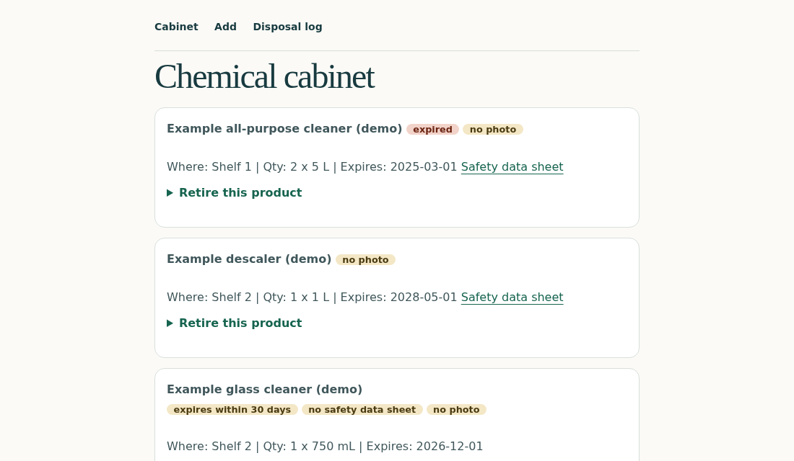

Add a product
Name, place, quantity and dates. Take a photo with the phone and attach the PDF safety data sheet.
Free and open source, MIT
A small, self-hosted inventory for the chemical and cleaning products kept by an association or a small business. Photo, safety data sheet, expiry date and a disposal log. Python only, nothing to install.


Review flagsExpired, expires within 30 days, no expiry date, no safety data sheet, no photo.
Disposal logRetire a product with a reason and how it was disposed of.
No accounts, no cloudOne folder holds everything. Copy it to back up.
Start here
The app does one job: keep an honest list of what is in the cupboard and what needs attention.
Run it
--data folder.Open http://localhost:8080 on the computer that runs it.
TERMINAL
git clone https://github.com/HALCONDEORO/chemical-cabinet cd chemical-cabinet python -m chemical_cabinet --data ./data --port 8080
By default the app only listens on 127.0.0.1, so a phone cannot reach it. On a computer or small server in the building, start it with --host 0.0.0.0 and open that machine's address from a phone on the same Wi-Fi. Browsers usually allow the camera only on HTTPS pages, so the better setup is a reverse proxy that adds a password and HTTPS. For a name such as cabinet.local, add --allowed-host cabinet.local. Never forward the port to the internet.
Anyone who can reach the port can read and change the inventory, so keep it on a trusted network or behind a proxy with authentication. The app does refuse requests coming from other web sites open in your browser: it checks the Host header, the Origin of every change and a form token. Uploads are limited to JPEG, PNG, WebP and PDF, checked by content, up to 25 MB.
How it is used
Nothing here recommends what to store together. Always follow the safety data sheet.
Name, place, quantity and dates. Take a photo with the phone and attach the PDF safety data sheet.
The cabinet page marks expired items, items expiring within 30 days and records that are incomplete.
Record the reason and how it was disposed of. The log keeps the history.
AI assistants
An optional local server lets an AI assistant list products, see which ones need review and read the disposal log. It runs on your machine over standard input and output, opens no network port, and is read-only unless you start it with --allow-write. It reports what is recorded. It does not advise on mixing or storing chemicals.
Setup, an example configuration and the exact tools are in the assistant guide.
TERMINAL
python -m chemical_cabinet.mcp --data ./data
Add --allow-write only if you want the assistant to add or retire records.
Other tools
Free chemical inventory tools already exist, mostly for university labs. This one aims at a single cupboard with nothing to install. This is a quick look, not a full survey.
| Project | Aimed at | License listed on its page |
|---|---|---|
| open_enventory | Labs: inventory and electronic lab notebook (PHP) | AGPL (per the US fork listing) |
| gochimitheque | Labs (Go) | GPL v3 |
| Pretzel | Hazardous chemical stock, desktop app | GPL v3 |
| TuDa.CIMS | University chemical stock | MIT |
| lab-inventory | Lab equipment and consumables | MIT |
| cheminv | Lab chemicals by location (MySQL) | CC BY-NC-SA 3.0 |
The Irish Health and Safety Authority also publishes a chemical inventory template as a spreadsheet. No code from these projects was copied. GPL and AGPL code can be reused, but only in a project that accepts those terms, and this one is MIT for now. A non-commercial license is not an open source license. Details: docs/ALTERNATIVES.md.
Limits
It is a tracking aid. It does not check legal compliance, does not tell you which products are safe to store together, and does not replace the manufacturer's safety data sheet, a written risk assessment or your national regulator's guidance.